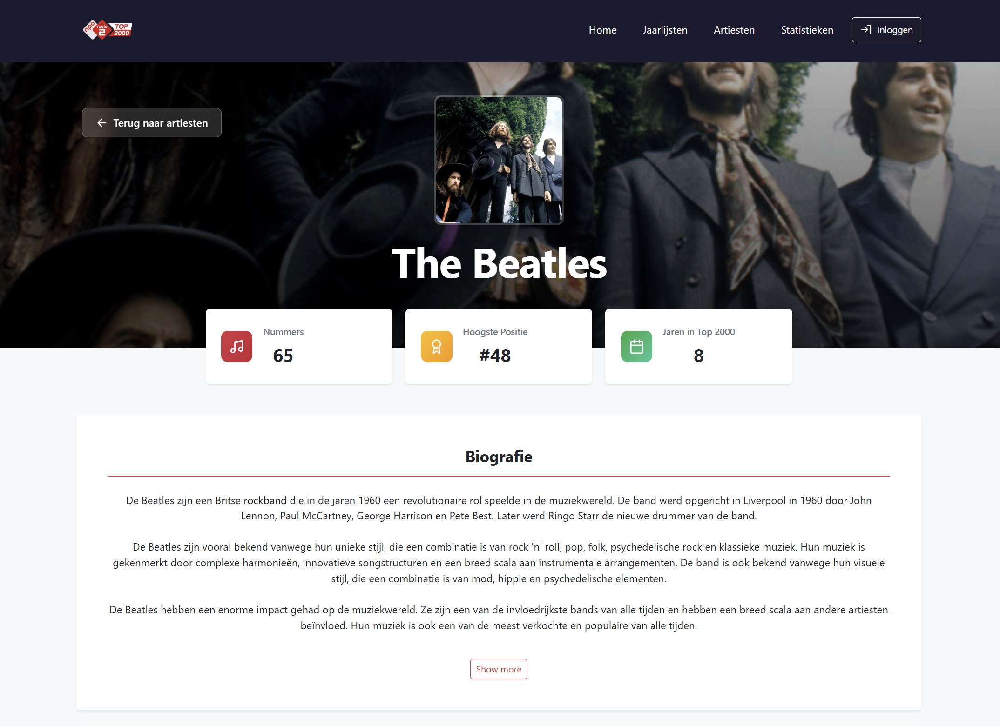
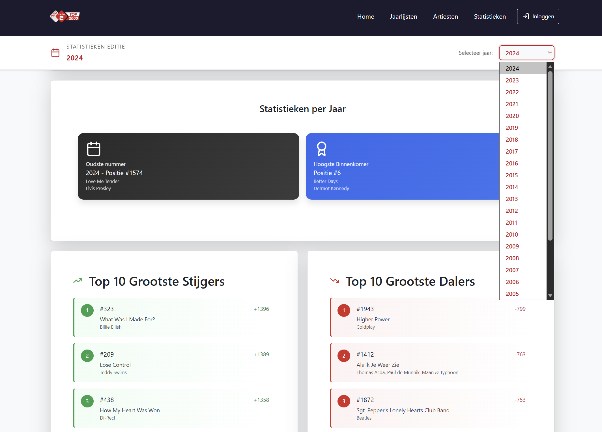
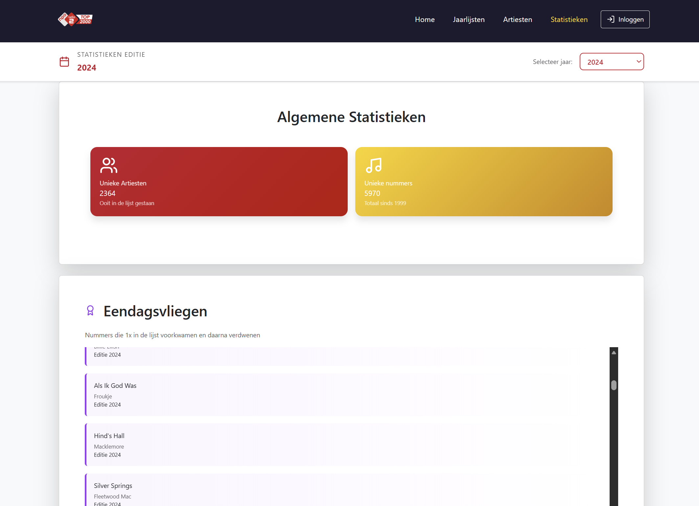
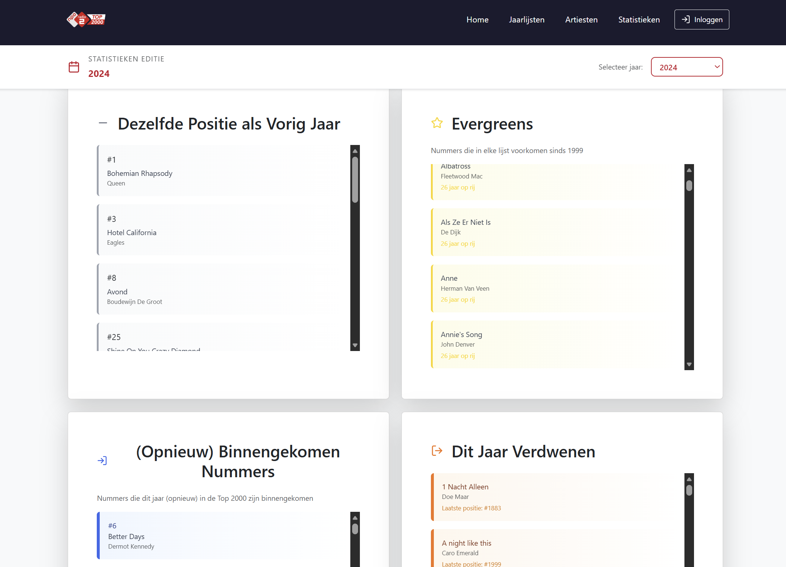

Project Overview
The Top2000 platform is a full-stack web application that presents an interactive ranking of the 2000 most popular songs of all time.
Users can explore yearly charts, view artist details, check statistics, browse DJ lineups, and dive into the event history through a modern, responsive interface.
Live link: top2000.runasp.net
Project type: Semester 6 team project
My Role & Contributions
Frontend Development
- Built responsive UI components and interactive views.
- Implemented navigation flows and optimized user experience.
- Ensured cross-browser and cross-device compatibility.
UI/UX Design
- Designed clean, modern layouts and user journeys.
- Created wireframes, visual styles, and interaction patterns.
- Focused on accessibility and intuitive user flow.
Backend API Development
- Developed secure REST APIs for songs, artists, statistics, and authentication.
- Implemented data validation, error handling, and performance optimizations.
Database Structure
- Designed relational database schemas.
- Optimized queries for large datasets.
- Ensured efficient data retrieval and data integrity.
DevOps
- Set up CI/CD pipelines.
- Automated deployments and environment configurations.
- Monitored application performance and stability.
Team Collaboration
- Worked in an Agile Scrum environment.
- Participated in sprint planning, code reviews, and team coordination.
- Communicated effectively across frontend, backend, and design roles.
Platform Features
Top2000 was designed as a complete music data experience, not just a static chart page. The product combines discovery, filtering, context, and storytelling around the yearly rankings.
Yearly Rankings
Users can browse complete Top2000 lists per year, compare positions, and quickly search tracks and artists.
Artist Detail Pages
Per-artist pages include biography, song history, and Top2000 positions for a richer context around every entry.
Advanced Statistics
Interactive statistic modules expose one-day flies, evergreens, rise/fall trends, and disappeared songs.
DJ Lineup & Event Context
The platform also includes event-related content such as lineups and historical context to complete the experience.
User Accounts
Authentication and role-based sections support login workflows and admin-level content management features.
Responsive by Default
All views were built mobile-first and tuned for desktop, tablet, and phone breakpoints.
Technical Architecture
- Frontend: Component-driven UI with reusable blocks, route-based navigation, and responsive layouts.
- Backend: REST API endpoints for songs, artists, statistics, authentication, and role-aware features.
- Database: Relational schema designed for chart editions, entries, songs, artists, and derived stats.
- Performance: Query optimization and paginated/filtered requests to keep data-heavy screens fast.
- Delivery: CI/CD pipelines and environment configuration for stable deployments.
Challenges & Solutions
- Large datasets: Solved with optimized SQL, structured indexes, and API-level filtering.
- Cross-team consistency: Solved with shared UI patterns, review cycles, and clear sprint ownership.
- UX complexity: Solved by iterating wireframes and testing user flow per module.
- Deployment reliability: Solved through automated pipelines and environment standardization.
Outcome & What I Learned
This project strengthened my ability to deliver end-to-end features across design, frontend, backend, and operations in a team setting.
I improved most in translating user journeys into technical implementation, balancing performance with maintainability, and collaborating in an Agile cadence with shared ownership.
App Screenshots



